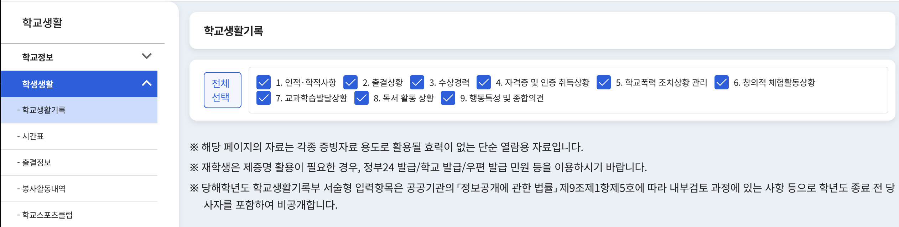

나이스 생활기록부 HTML 파일 하나로 끝내는 내신 분석
나이스 플러스(neisplus.kr) 학생 계정으로 바로 분석합니다
🔒 아이디/비밀번호는 로컬 서버에서만 처리되며 외부로 전송되지 않습니다.
나이스(NEIS)에서 저장한 생기부 HTML 파일을 업로드하세요
🔒 모든 분석은 브라우저 내에서만 처리되며 서버로 전송되지 않습니다.
학교생활기록부 메뉴에서 항목을 전체선택 체크 후 조회합니다.

Ctrl+S (Mac: Cmd+S) → 웹페이지(HTML만)으로 저장
| 학기 | 교과 | 과목 | 단위 | 등급 | 성취도 | 원점수 | 평균 | 표준편차 | 유형 |
|---|